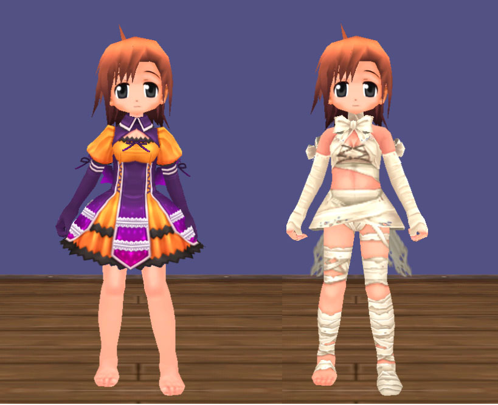

หน้า 17 จากทั้งหมด 19
Re: รวมเทคนิคปรับแต่ง DAT เกม ECO โฉมใหม่ด้วยมือเรา

โพสต์แล้ว:
เสาร์ 18 ก.ย. 2010 9:19 amโดย ECO
Re: รวมเทคนิคปรับแต่ง DAT เกม ECO โฉมใหม่ด้วยมือเรา
โพสต์แล้ว:
พฤหัสฯ. 23 ก.ย. 2010 8:33 pmโดย ECO
ปล. พาสก็ นักเวท ที่อยู่ภายในบ้านมารแดง ( Touhou ) นั้น คือใคร (ใบ้ให้อีกนิด ผมสีม่วง + ห้องสมุด)
ใครไม่รู้จักก็... อ่านะ... ลองๆ ค้นดูละกัน =w="
เรามะรุอะเฉลยที
Re: รวมเทคนิคปรับแต่ง DAT เกม ECO โฉมใหม่ด้วยมือเรา
โพสต์แล้ว:
พฤหัสฯ. 23 ก.ย. 2010 8:35 pmโดย ECO
เอ๋ห้องสมุดนี่คุ้นๆนะใช่ Sage Master ป่ะ
Re: รวมเทคนิคปรับแต่ง DAT เกม ECO โฉมใหม่ด้วยมือเรา
โพสต์แล้ว:
พฤหัสฯ. 23 ก.ย. 2010 9:07 pmโดย ECO
playpark เขียน:ปล. พาสก็ นักเวท ที่อยู่ภายในบ้านมารแดง ( Touhou ) นั้น คือใคร (ใบ้ให้อีกนิด ผมสีม่วง + ห้องสมุด)
ใครไม่รู้จักก็... อ่านะ... ลองๆ ค้นดูละกัน =w="
เรามะรุอะเฉลยที
มันเป็นเนื้อเรื่องของเกม Touhou ไม่ใช่รึ

ไม่ใช่ ECO นะ
นี่ก็ไม่ค่อยรู้จัก ลองไปหาใน พระอาจารย์ กุเกิล ละกัน

Re: รวมเทคนิคปรับแต่ง DAT เกม ECO โฉมใหม่ด้วยมือเรา
โพสต์แล้ว:
ศุกร์ 24 ก.ย. 2010 8:04 pmโดย ECO
Charon เขียน:playpark เขียน:ปล. พาสก็ นักเวท ที่อยู่ภายในบ้านมารแดง ( Touhou ) นั้น คือใคร (ใบ้ให้อีกนิด ผมสีม่วง + ห้องสมุด)
ใครไม่รู้จักก็... อ่านะ... ลองๆ ค้นดูละกัน =w="
เรามะรุอะเฉลยที
มันเป็นเนื้อเรื่องของเกม Touhou ไม่ใช่รึ
ไม่ใช่ ECO นะ
นี่ก็ไม่ค่อยรู้จัก ลองไปหาใน พระอาจารย์ กุเกิล ละกัน
อ่าวรึบอกทีจิ
Re: รวมเทคนิคปรับแต่ง DAT เกม ECO โฉมใหม่ด้วยมือเรา
โพสต์แล้ว:
อาทิตย์ 26 ก.ย. 2010 9:25 pmโดย ECO
จริงๆนะเอาตัวที่นี้แก้ไปแล้วไปลงก็ได้เลยนะไม่ต้องไปนั่งตะบี้ตะบันหาพาสให้เหนื่อยอีกทำไมละนั้น =w=''
เพราะมันก้เป็นตัวๆเดียวกันหมดละแค่นี้เอามาแก้ใหม่ให้มันสมบูรณ์มากขึ้นเท่านั้นเอง
Re: รวมเทคนิคปรับแต่ง DAT เกม ECO โฉมใหม่ด้วยมือเรา
โพสต์แล้ว:
จันทร์ 27 ก.ย. 2010 1:22 amโดย ECO
นั่นสินะ =w="
(บ้าอยู่ตั้งนาน TwT)
Re: รวมเทคนิคปรับแต่ง DAT เกม ECO โฉมใหม่ด้วยมือเรา
โพสต์แล้ว:
จันทร์ 27 ก.ย. 2010 11:05 amโดย ECO
ยุ่นมีของน่ารักๆ มายั่วอีกละ


Re: รวมเทคนิคปรับแต่ง DAT เกม ECO โฉมใหม่ด้วยมือเรา
โพสต์แล้ว:
จันทร์ 27 ก.ย. 2010 1:28 pmโดย ECO
เพิ่ง up patch มาเหมือนกัน ว่าแต่มีหางด้วยหรอ เห็นในเว็บนั้นโพสแต่ชุดกะทรงผม และก็ pet
กำลังจะทำ mod ทรงผมแต่ไม่รู้จะเอาไปแทนอะไร ทุกไอดีมีแต่ทรงทวิน -.- ไม่อยากเปลี่ยน(ชอบทวินมักๆ)
Re: รวมเทคนิคปรับแต่ง DAT เกม ECO โฉมใหม่ด้วยมือเรา
โพสต์แล้ว:
จันทร์ 27 ก.ย. 2010 10:01 pmโดย ECO
หางใส่ไม่ยาก ใส่เืพื่มไปกับชุดมันเลยก็ได้นินา =w=+
ตอนนี้ที่ยุ่้นมีอะไรแปลกๆอัพมาเรื่อยเลย น่าสนใจยิ่งนัก
Re: รวมเทคนิคปรับแต่ง DAT เกม ECO โฉมใหม่ด้วยมือเรา
โพสต์แล้ว:
อังคาร 12 ต.ค. 2010 2:50 pmโดย ECO
ใครเล่นเซิฟยุ่นอยู่ ไปหามาให้ดูที
พวก 6 ปีก เวลาใส่ บุส มันเปนไง - -
Re: รวมเทคนิคปรับแต่ง DAT เกม ECO โฉมใหม่ด้วยมือเรา
โพสต์แล้ว:
พุธ 13 ต.ค. 2010 6:46 pmโดย ECO
ที่ว่ามองไม่เห็นกันอะเพราะตัวที่ใช้มันเป็นเวอร์ชั่นเก่าหรือปล่าว
ตอนนี้ลองอัพเกรดเวอร์ชั่นที่ใช้มองของละมันก็มองเห็นนะ ไม่ใช่ว่าจะไม่เห็น =w=''
Re: รวมเทคนิคปรับแต่ง DAT เกม ECO โฉมใหม่ด้วยมือเรา
โพสต์แล้ว:
ศุกร์ 15 ต.ค. 2010 2:38 pmโดย ECO
ใครรู้รหัส Monster Identy ในเควส ชุด 99 มั่งงะ
Re: รวมเทคนิคปรับแต่ง DAT เกม ECO โฉมใหม่ด้วยมือเรา
โพสต์แล้ว:
พุธ 24 พ.ย. 2010 4:32 pmโดย ECO
ภาพตัวอย่างปีก NPC เทพ 6 ปีก ที่เอามาแทนปีกเผ่ามาร
มันจะมีแค่ Motion เดียวตลอดทั้งเกม (และถ้ามี Motion อื่นๆ ที่ตัวไฟล์ไม่มี ปีกจะหายไป ไปอยู่กลางหลังแบบเป็นแผ่นๆ(เพราะขาดไฟล์ Anim)
ปอลิ่ง: กดดูเองนะ เพราะทำแบบ IMG มันคงจะเป็นโหลดโหดแทน
ยืนปกติ
http://img202.imageshack.us/img202/7483/78278541.gifต่อสู้
http://img190.imageshack.us/img190/5209/73074114.gifหรือกดนั่ง (ทางนี้เอาท่าเต้นมาแทนท่านั่ง)
http://img16.imageshack.us/img16/3261/91958663.gifหรือรูปแบบเต็มๆ (ขนาดไฟล์มันใหญ่เกินเว็บอัพ)
http://www.mediafire.com/?pmr95ecr1xt3b2phttp://www.mediafire.com/?n67z45z64th4y4chttp://www.mediafire.com/?x3l0mxq04wke41wถ้าต้องการก็จะทำไฟล์ไว้ (ตอนนี้ยังไม่ได้ไปค้น)
Re:
โพสต์แล้ว:
ศุกร์ 03 ธ.ค. 2010 3:18 pmโดย ECO
comelyfay เขียน:การวาด skin เกม (.tga) อย่างง่าย1.ติดตั้งโปรแกรม Pict Bear พร้อมทั้งส่วนเสริม
2.เปิดไฟล์ .tga ที่จะทำการแก้ไขออกมา จากนั้นเซฟเป็นไฟล์ png (เพราะง่ายต่อการแก้ไข)
3.ใช้โปรแกรมแต่งรูปอะไรก็ได้ แต่งได้ตามสะดวก กรณีนี้ใช้โปรแกรม sai เพราะถนัดโปรแกรมนี้

4.เซฟไฟล์ปกติจากนั้นเปิดด้วยโปรแกรม Pict Bear อีกที
5.เซฟเป็นสกุล .tag อย่าลืมตั้งคำว่า pri- นำหน้าด้วยละ

6.รันตัว EcoDatRebuild.exe อีกครั้ง เสร็จสมบูรณ์
ไฟล์ tga เอาจากที่ไหนครับหาไม่เจอ